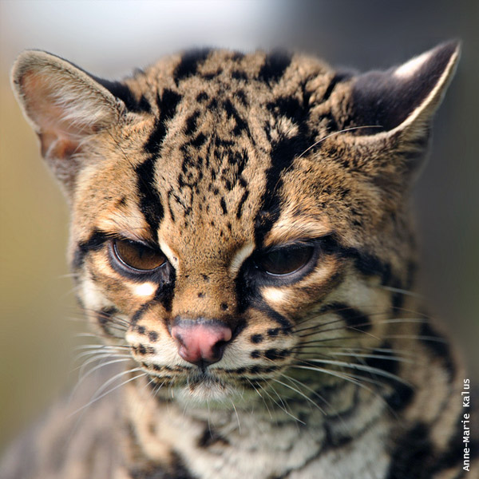

Margay
- Nombre científico: Leopardus wiedii
- Mide entre 90 y 120 cm
- El peso oscila entre los 2 y los 5 kg.
Por sus grandes habilidades para moverse en el estrato arbóreo se lo ha supuesto durante mucho tiempo un felino arborícola, sin embargo existe evidencia suficiente para afirmar que sus hábitos son principalmente terrestres, aunque utiliza los árboles para descansar y, en ocasiones, cazar a sus presas. Sus adaptaciones a la dinámica arbórea incluyen metatarsos móviles y pies grandes y acolchados. Asimismo, sus pies traseros son capaces de rotar en un ángulo de 180°, lo que le permite desplegar una agilidad verdaderamente acrobática. Entre otras proezas es capaz de descender de los árboles cabeza abajo o quedar colgado de ramas con una sola extremidad. Puede también usar la cola como balancín para mantener estabilidad.
Sus orejas son redondeadas, grandes, negras por fuera y con un lunar blanco. La coloración de fondo del Margay es más amarillenta que la del Tirica (Leopardus guttulus), con manchas que forman ocelos con bordes negros y centros parduzcos o café más o menos alineadas en el dorso y en los flancos. Tiene el mentón y la zona periocular blancos al igual que el vientre.